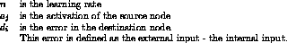

Next:
Elman Networks
Up:
Models of Partial
Previous:
Models of Partial
Jordan Networks

Figure:
Jordan network
Literature: [
Jor86b
], [
Jor86a
]
Niels.Mache@informatik.uni-stuttgart.de
Tue Nov 28 10:30:44 MET 1995